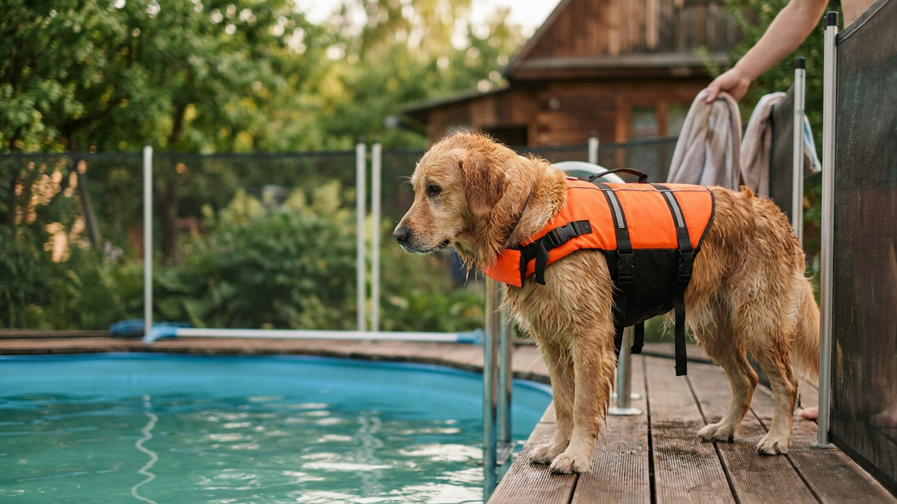

Большинство собак умеют плавать — но не умеют выходить из надувного бассейна с гладкими стенками. Собака, которая не нашла выход, паникует и тратит силы впустую: это реальный риск даже для хорошего пловца. Семь правил и один навык, который нужно отработать до первого заплыва, — ниже.
🐾 Дневник здоровья питомца — в кармане
Вес, прививки, симптомы и напоминания в одном приложении. AnimaLife следит за здоровьем питомца вместо вас.
Инстинкт «гребли» есть у большинства собак, но уровень плавательных способностей очень разный. Брахицефалы (мопсы, бульдоги, пекинесы) физически тяжело плавают из-за строения морды — вода попадает в нос, голова тяжёлая. Собаки с очень короткими лапами или массивным телом устают быстро.
Если ваша собака впервые у бассейна — сначала зайдите с ней, поддержите, посмотрите на реакцию. Не бросайте в воду «чтобы поплыла».
Это самое важное правило. Собака, которая не знает, где и как выйти из бассейна, паникует и тратит силы впустую. Паника в воде — это риск.
Надувной бассейн с гладкими стенками не имеет выхода для собаки. Даже если она запомнила место выхода — в панике может забыть. Специальный пандус для бассейнов (продаётся в зоомагазинах и на маркетплейсах) или простой деревянный щит с нескользящим покрытием — это необходимость, а не опция.
Пандус должен быть стабильным, не скользить, не шататься. Проверьте это до того, как собака войдёт в воду.
Даже хорошо плавающую собаку. Даже в небольшом бассейне. Даже если «ненадолго».
Собака может прыгнуть в воду в ваше отсутствие, устать или запаниковать без вас. Если уходите — собака идёт с вами или бассейн закрыт.
Собаки в воде быстро теряют тепло, особенно в холодной воде. И, наоборот, при высокой нагрузке могут перегреться. Первые сессии — 10-15 минут. Смотрите на состояние: если дрожит, устала, дышит очень тяжело — заканчивайте и уходите в тень.
🐾 Не уверены, что это опасно?
Опишите симптом в AnimaLife — AI-ветеринар за минуту подскажет, что в пределах нормы, а когда пора к врачу.
🐾 Понравился разбор?
Подпишитесь на канал — каждый день разбираем по одному тревожному симптому у кошек и собак: что в пределах нормы, а когда пора к врачу. Подпишитесь, чтобы не пропустить разбор, который может спасти здоровье вашего питомца.
Если бассейн с хлором — не позволяйте собаке пить из него. Поставьте рядом отдельную миску с чистой водой. После купания в хлорированной воде аккуратно протрите уши собаки — влага в ушных каналах создаёт подходящую среду для раздражения. Особенно это касается пород с висячими ушами.
Если после купания собака трясёт ушами или активно чешет их — обсудите со своим ветеринаром.
Специальные спасательные жилеты для собак — реальная вещь, а не маркетинг. Они помогают держаться на воде без активной гребли, снижают усталость и дают запас времени. Особенно полезны для:
Жилет должен подходить по размеру — не болтаться и не давить. Примерьте и проверьте до водных процедур.
Не все собаки любят купаться — и это нормально. Признаки комфорта: сама заходит в воду, активно гребёт, выходит и снова заходит, игривая. Признаки дискомфорта: напрягается при входе, пытается немедленно выйти, дрожит. Не заставляйте. Не все породы и не все индивидуальные собаки получают удовольствие от воды.
Если собака раньше не плавала — не бросайте её в воду «учиться». Знакомство с водой должно быть постепенным и положительным.
После плавания в бассейне или открытом водоёме несколько простых действий помогут избежать дискомфорта.
Материал носит информационный характер и не заменяет очную консультацию ветеринара.